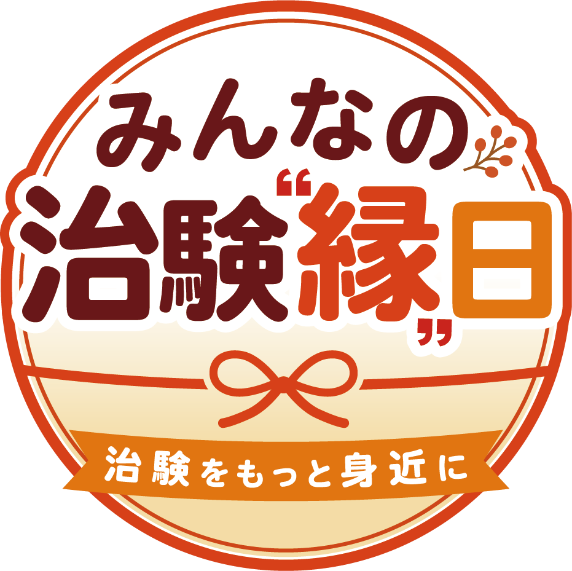
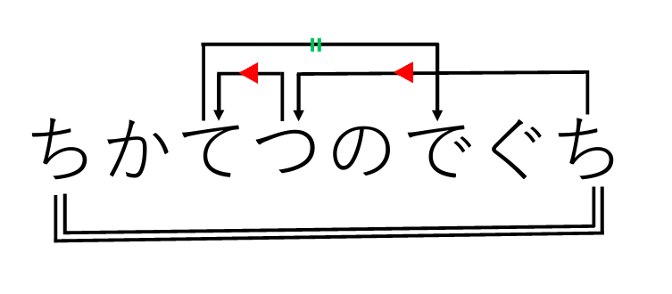
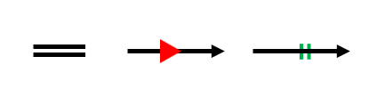

「チケン君と治験の知見」
ヒントページ

ストーリーはこちら
目次
謎１のヒントと答え
ヒント１
矢印の前後の法則を考えてみましょう
ヒント２
「ちかてつのでぐち」だと下のようになります

ヒント3

上の画像の左側の記号なら同じ文字、真ん中の記号なら五十音で次の文字、
右側の記号なら濁点を付けた文字になります
答え
ヒント3の法則をあてはめてみると答えは「バイト」になります
謎２のヒントと答え
ヒント１
イラストは上から「木々」「写真家」「神経」「銀」を表しています
ヒント２
イラストをひらがなで表し真偽を隠してみましょう
ヒント3
真偽を隠すとは、イラストから「しん」「ぎ」の文字をとるということです
答え
「し」「ん」の単体の文字はとらないことに注意し、「しん」「ぎ」の文字をイラストからとると
上から「木々→ぎ」「写真家→ぎ」「神経→けい」「銀→ん」となるため、答えは「記者会見」になります
謎３のヒントと答え
ヒント１
治験は、はじめは元気な人、次に少人数の患者さん、最後により多くの患者さんで、薬が安全で効果があるかを確かめる流れになっています。
ヒント２
元気な人、少人数の患者さん、多くの患者さんのイラストを順にたどると「あんさーはちゅうしゃきのさき」となります
ヒント3
この謎の中から注射器を探してみると看護師さんが注射器を持っています
答え
注射器の先を読むと「あんぜん」と4文字の言葉がかかれているため、答えは「安全」です
謎４のヒントと答え
ヒント１
イラストはスタートのイラストから時計回りに「くすり」「もぐら」「ピーマン」「ケチャップ」「なし」「パン」です
ヒント２
イラストを五十音順に線でつないでいくと「ケチャップれんだしろ」となります
ヒント3
WEBサイト上のケチャップを連打すると、イラストが変化し、「ピーマン→パプリカ」「なし→リンゴ」に変わりました
答え
同じようにイラストを五十音順に線でつないでいくと「かんしがこたえ」となるため、答えは「かんし」です